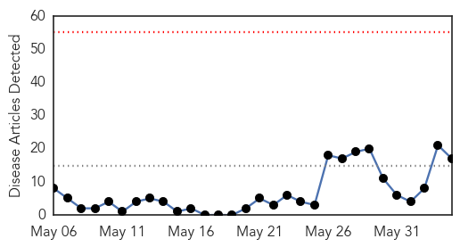
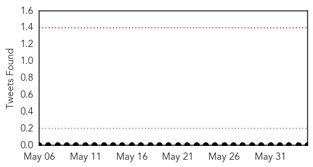
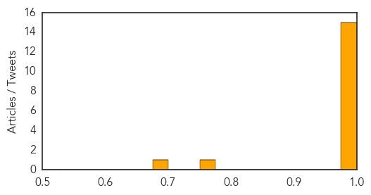
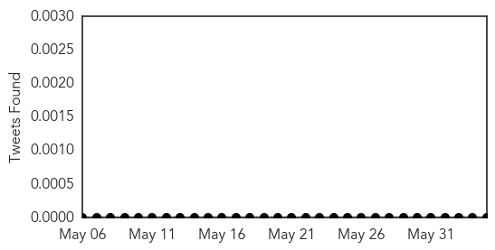
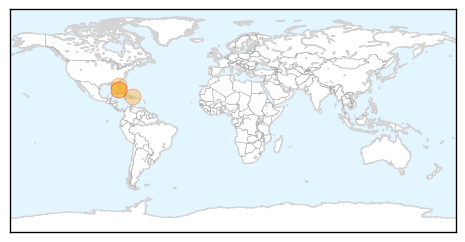

Ebola
30-Day Web Trend
0 alerts, 0 warnings

30-Day Twitter Trend
1 alerts, 0 warnings

Article Locations
Article Confidences
Top Articles:
- 1.000
- Ebola virus claims lives of more than 200 people in Guinea
- 1.000
- Ebola Virus Outbreak in West Africa Spikes in Recent Days
- 1.000
- Doctors Without Borders Worried About Spread of Ebola Outbreak
- 1.000
- WHO: Ebola virus death toll passes 200 in Guinea, virus spreading
- 1.000
- Guinea's Ebola death toll rises above 200: WHO
- 1.000
- WHO: Guinea’s Ebola outbreak approaching deadliest ever
- 0.999
- Guinea, Sierra Leone see spike in Ebola cases
- 0.999
- UPDATE 1-Guinea, Sierra Leone see spike in Ebola cases - WHO
- 0.999
- 21 Dead As New Spike Of Ebola Cases Strikes Guinea, Sierra Leone
- 0.998
- Deadly Ebola outbreak leads British mining firm to evacuate workers from Sierra Leone
- 0.998
- UPDATE 1-Guinea, Sierra Leone see spike in Ebola cases - WHO
- 0.997
- UK firm evacuates some staff from Sierra Leone over Ebola
- 0.994
- 5 dead 50 cases reported in Sierra Leone Ebola outbreak
- 0.990
- Non-production staff removed from Sierra Leone Mine after Ebola risk
- 0.989
- Workers evacuated following an outbreak of the deadly doomsday Ebola virus.
- 0.756
- BRIEF-London Mining taking precautionary travel measures in Sierra Leone, says production unaffected
- 0.675
- London Mining evacuates staff due to ebola outbreak in Sierra Leone
Top Tweets:
-
No tweets found for Jun 04, 2014
Dengue Fever
30-Day Web Trend
0 alerts, 0 warnings
30-Day Twitter Trend
1 alerts, 0 warnings

Article Locations
Article Confidences

Top Articles:
Top Tweets:
-
No tweets found for Jun 04, 2014